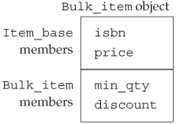

15.2. Defining Base and Derived ClassesIn many ways, base and derived classes are defined like other classes we have already seen. However, there are some additional features that are required when defining classes in an inheritance hierarchy. This section will present those features. Subsequent sections will see how use of these features impacts classes and the programs we write using inherited classes. 15.2.1. Defining a Base ClassLike any other class, a base class has data and function members that define its interface and implementation. In the case of our (very simplified) bookstore pricing application, our Item_base class defines the book and net_price functions and needs to store an ISBN and the standard price for the book:
// Item sold at an undiscounted price
// derived classes will define various discount strategies
class Item_base {
public:
Item_base(const std::string &book = "",
double sales_price = 0.0):
isbn(book), price(sales_price) { }
std::string book() const { return isbn; }
// returns total sales price for a specified number of items
// derived classes will override and apply different discount algorithms
virtual double net_price(std::size_t n) const
{ return n * price; }
virtual ~Item_base() { }
private:
std::string isbn; // identifier for the item
protected:
double price; // normal, undiscounted price
};
For the most part, this class looks like others we have seen. It defines a constructor along with the functions we have already described. That constructor uses default arguments (Section 7.4.1, p. 253), which allows it to be called with zero, one, or two arguments. It initializes the data members from these arguments. The new parts are the protected access label and the use of the virtual keyword on the destructor and the net_price function. We'll explain virtual destructors in Section 15.4.4 (p. 587), but for now it is worth noting that classes used as the root class of an inheritance hierarchy generally define a virtual destructor. Base-Class Member FunctionsThe Item_base class defines two functions, one of which is preceded by the keyword virtual. The purpose of the virtual keyword is to enable dynamic binding. By default, member functions are nonvirtual. Calls to nonvirtual functions are resolved at compile time. To specify that a function is virtual, we precede its return type by the keyword virtual. Any nonstatic member function, other than a constructor, may be virtual. The virtual keyword appears only on the member-function declaration inside the class. The virtual keyword may not be used on a function definition that appears outside the class body. We'll have more to say about virtual functions in Section 15.2.4 (p. 566).
Access Control and InheritanceIn a base class, the public and private labels have their ordinary meanings: User code may access the public members and may not access the private members of the class. The private members are accessible only to the members and friends of the base class. A derived class has the same access as any other part of the program to the public and private members of its base class: It may access the public members and has no access to the private members. Sometimes a class used as a base class has members that it wants to allow its derived classes to access, while still prohibiting access to those same members by other users. The protected access label is used for such members. A protected member may be accessed by a derived object but may not be accessed by general users of the type. Our Item_base class expects its derived classes to redefine the net_price function. To do so, those classes will need access to the price member. Derived classes are expected to access isbn in the same way as ordinary users: through the book access function. Hence, the isbn member is private and is inaccessible to classes that inherit from Item_base. 15.2.2. protected MembersThe protected access label can be thought of as a blend of private and public:
In addition, protected has another important property:
As an example, let's assume that Bulk_item defines a member function that takes a reference to a Bulk_item object and a reference to an Item_base object. This function may access the protected members of its own object as well as those of its Bulk_item parameter. However, it has no special access to the protected members in its Item_base parameter:
void Bulk_item::memfcn(const Bulk_item &d, const Item_base &b)
{
// attempt to use protected member
double ret = price; // ok: uses this->price
ret = d.price; // ok: uses price from a Bulk_item object
ret = b.price; // error: no access to price from an Item_base
}
The use of d.price is okay, because the reference to price is through an object of type Bulk_item. The use of b.price is illegal because Bulk_item has no special access to objects of type Item_base.
15.2.3. Derived ClassesTo define a derived class, we use a class derivation list to specify the base class(es). A class derivation list names one or more base classes and has the form
class classname: access-label base-class
where access-label is one of public, protected, or private, and base-class is the name of a previously defined class. As we'll see, a derivation list might name more than one base class. Inheritance from a single base class is most common and is the topic of this chapter. Section 17.3 (p. 731) covers use of multiple base classes. We'll have more to say about the access label used in a derivation list in Section 15.2.5 (p. 570). For now, what's useful to know is that the access label determines the access to the inherited members. When we want to inherit the interface of a base class, then the derivation should be public. A derived class inherits the members of its base class and may define additional members of its own. Each derived object contains two parts: those members that it inherits from its base and those it defines itself. Typically, a derived class (re)defines only those aspects that differ from or extend the behavior of the base. Defining a Derived ClassIn our bookstore application, we will derive Bulk_item from Item_base, so Bulk_item will inherit the book, isbn, and price members. Bulk_item must redefine its net_price function and define the data members needed for that operation:
// discount kicks in when a specified number of copies of same book are sold
// the discount is expressed as a fraction used to reduce the normal price
class Bulk_item : public Item_base {
public:
// redefines base version so as to implement bulk purchase discount policy
double net_price(std::size_t) const;
private:
std::size_t min_qty; // minimum purchase for discount to apply
double discount; // fractional discount to apply
};
Each Bulk_item object contains four data elements: It inherits isbn and price from Item_base and defines min_qty and discount. These latter two members specify the minimum quantity and the discount to apply once that number of copies are purchased. The Bulk_item class also needs to define a constructor, which we shall do in Section 15.4 (p. 580). Derived Classes and virtual FunctionsOrdinarily, derived classes redefine the virtual functions that they inherit, although they are not requried to do so. If a derived class does not redefine a virtual, then the version it uses is the one defined in its base class. A derived type must include a declaration for each inherited member it intends to redefine. Our Bulk_item class says that it will redefine the net_price function but will use the inherited version of book. With one exception, the declaration (Section 7.4, p. 251)of a virtual function in the derived class must exactly match the way the function is defined in the base. That exception applies to virtuals that return a reference (or pointer) to a type that is itself a base class. A virtual function in a derived class can return a reference (or pointer) to a class that is publicly derived from the type returned by the base-class function. For example, the Item_base class might define a virtual function that returned an Item_base*. If it did, then the instance defined in the Bulk_item class could be defined to return either an Item_base* or a Bulk_item*. We'll see an example of this kind of virtual in Section 15.9 (p. 607).
Derived Objects Contain Their Base Classes as SubobjectsA derived object consists of multiple parts: the (nonstatic) members defined in the derived class itself plus the subobjects made up of the (nonstatic) members of its base class. We can think of our Bulk_item class as consisting of two parts as represented in Figure 15.1. Figure 15.1. Conceptual Structure of a Bulk_item Object
Functions in the Derived May Use Members from the BaseAs with any member function, a derived class function can be defined inside the class or outside, as we do here for the net_price function:
// if specified number of items are purchased, use discounted price
double Bulk_item::net_price(size_t cnt) const
{
if (cnt >= min_qty)
return cnt * (1 - discount) * price;
else
return cnt * price;
}
This function generates a discounted price: If the given quantity is more than min_qty, we apply the discount (which was stored as a fraction) to the price.
A Class Must Be Defined to Be Used as a Base ClassA class must be defined before it can be used as a base class. Had we declared, but not defined, Item_base, we could not use it as our base class:
class Item_base; // declared but not defined
// error: Item_base must be defined
class Bulk_item : public Item_base { ... };
The reason for this restriction should already be easy to see: Each derived class contains, and may access, the members of its base class. To use those members, the derived class must konw what they are. One implication of this rule is that it is impossible to derive a class from itself. Using a Derived Class as a Base ClassA base class can itself be a derived class:
class Base { /* ... */ };
class D1: public Base { /* ... */ };
class D2: public D1 { /* ... */ };
Each class inherits all the members of its base class. The most derived type inherits the members of its base, which in turn inherits the members of its base and so on up the inheritance chain. Effectively, the most derived object contains a subobject for each of its immediate-base and indirect-base classes. Declarations of Derived ClassesIf we need to declare (but not yet define) a derived class, the declaration contains the class name but does not include its derivation list. For example, the following forward declaration of Bulk_item results in a compile-time error:
// error: a forward declaration must not include the derivation list
class Bulk_item : public Item_base;
The correct forward declarations are:
// forward declarations of both derived and nonderived class
class Bulk_item;
class Item_base;
15.2.4. virtual and Other Member FunctionsBy default, function calls in C++ do not use dynamic binding. To trigger dynamic binding, two conditions must be met: First, only member functions that are specified as virtual can be dynamically bound. By default, member functions are not virtual; nonvirtual functions are not dynamically bound. Second, the call must be made through a reference or a pointer to a base-class type. To understand this requirement, we need to understand what happens when we use a reference or pointer to an object that has a type from an inheritance hierarchy.
Derived to Base ConversionsBecause every derived object contains a base part, we can bind a base-type reference to the base-class part of a derived object. We can also use a pointer to base to point to a derived object:
// function with an Item_base reference parameter
double print_total(const Item_base&, size_t);
Item_base item; // object of base type
// ok: use pointer or reference to Item_base to refer to an Item_base object
print_total(item, 10); // passes reference to an Item_base object
Item_base *p = &item; // p points to an Item_base object
Bulk_item bulk; // object of derived type
// ok: can bind a pointer or reference to Item_base to a Bulk_item object
print_total(bulk, 10); // passes reference to the Item_base part of bulk
p = &bulk; // p points to the Item_base part of bulk
This code uses the same base-type pointer to point to an object of the base type and to an object of the derived type. It also calls a function that expects a reference to the base type, passing an object of the base-class type and also passing an object of the derived type. Both uses are fine, because every derived object has a base part. Because we can use a base-type pointer or reference to refer to a derived-type object, when we use a base-type reference or pointer, we don't know the type of the object to which the pointer or reference is bound: A base-type reference or pointer might refer to an object of base type or an object of derived type. Regardless of which actual type the object has, the compiler treats the object as if it is a base type object. Treating a derived object as if it were a base is safe, because every derived object has a base subobject. Also, the derived class inherits the operations of the base class, meaning that any operation that might be performed on a base object is available through the derived object as well.
Calls to virtual Functions May Be Resolved at Run timeBinding a base-type reference or pointer to a derived object has no effect on the underlying object. The object itself is unchanged and remains a derived object. The fact that the actual type of the object might differ from the static type of the reference or pointer addressing that object is the key to dynamic binding in C++. When a virtual function is called through a reference or pointer, the compiler generates code to decide at run time which function to call. The function that is called is the one that corresponds to the dynamic type. As an example, let's look again at the print_total function:
// calculate and print price for given number of copies, applying any discounts
void print_total(ostream &os,
const Item_base &item, size_t n)
{
os << "ISBN: " << item.book() // calls Item_base::book
<< "\tnumber sold: " << n << "\ttotal price: "
// virtual call: which version of net_price to call is resolved at run time
<< item.net_price(n) << endl;
}
Because the item parameter is a reference and net_price is virtual, the version of net_price that is called in item.net_price(n) depends at run time on the actual type of the argument bound to the item parameter:
Item_base base;
Bulk_item derived;
// print_total makes a virtual call to net_price
print_total(cout, base, 10); // calls Item_base::net_price
print_total(cout, derived, 10); // calls Bulk_item::net_price
In the first call, the item parameter is bound, at run time, to an object of type Item_base. As a result, the call to net_price inside print_total calls the version defined in Item_base. In the second call, item is bound to an object of type Bulk_item. In this call, the version of net_price called from print_total will be the one defined by the Bulk_item class.
Nonvirtual Calls Are Resolved at Compile TimeRegardless of the actual type of the argument passed to print_total, the call of book is resolved at compile time to Item_base::book.
Nonvirtual functions are always resolved at compile time based on the type of the object, reference, or pointer from which the function is called. The type of item is reference to const Item_base, so a call to a nonvirtual function on that object will call the one from Item_base regardless of the type of the actual object to which item refers at run time. Overriding the Virtual MechanismIn some cases, we want to override the virtual mechanism and force a call to use a particular version of a virtual function. We can do so by using the scope operator:
Item_base *baseP = &derived;
// calls version from the base class regardless of the dynamic type of baseP
double d = baseP->Item_base::net_price(42);
This code forces the call to net_price to be resolved to the version defined in Item_base. The call will be resolved at compile time.
Why might we wish to override the virtual mechanism? The most common reason is when a derived-class virtual calls the version from the base. In such cases, the base-class version might do work common to all types in the hierarchy. Each derived type adds only whatever is particular to its own type. For example, we might define a Camera hierarchy with a virtual display operation. The display function in the Camera class would display information common to all Cameras. A derived class, such as PerspectiveCamera, would need to display both that common information and the information unique to PerspectiveCamera. Rather than duplicate the Camera operations within PerspectiveCamera's implementation of display, we could explicitly invoke the Camera version to display the common information. In a case such as this one, we'd know exactly which instance to invoke, so there would be no need to go through the virtual mechanism.
Virtual Functions and Default ArgumentsLike any other function, a virtual function can have default arguments. As usual, the value, if any, of a default argument used in a given call is determined at compile time. If a call omits an argument that has a default value, then the value that is used is the one defined by the type through which the function is called, irrespective of the object's dynamic type. When a virtual is called through a reference or pointer to base, then the default argument is the value specified in the declaration of the virtual in the base class. If a virtual is called through a pointer or reference to derived, the default argument is the one declared in the version in the derived class. Using different default arguments in the base and derived versions of the same virtual is almost guaranteed to cause trouble. Problems are likely to arise when the virtual is called through a reference or pointer to base, but the version that is executed is the one defined by the derived. In such cases, the default argument defined for the base version of the virtual will be passed to the derived version, which was defined using a different default argument. 15.2.5. Public, Private, and Protected InheritanceAccess to members defined within a derived class is controlled in exactly the same way as access is handled for any other class (Section 12.1.2, p. 432). A derived class may define zero or more access labels that specify the access level of the members following that label. Access to the members the class inherits is controlled by a combination of the access level of the member in the base class and the access label used in the derived class' derivation list.
The base class itself specifies the minimal access control for its own members. If a member is private in the base class, then only the base class and its friends may access that member. The derived class has no access to the private members of its base class, nor can it make those members accessible to its own users. If a base class member is public or protected, then the access label used in the derivation list determines the access level of that member in the derived class:
As an example, consider the following hierarchy:
class Base {
public:
void basemem(); // public member
protected:
int i; // protected member
// ...
};
struct Public_derived : public Base {
int use_base() { return i; } // ok: derived classes can access i
// ...
};
struct Private_derived : private Base {
int use_base() { return i; } // ok: derived classes can access i
};
All classes that inherit from Base have the same access to the members in Base, regardless of the access label in their derivation lists. The derivation access label controls the access that users of the derived class have to the members inherited from Base:
Base b;
Public_derived d1;
Private_derived d2;
b.basemem(); // ok: basemem is public
d1.basemem(); // ok: basemem is public in the derived class
d2.basemem(); // error: basemem is private in the derived class
Both Public_derived and Private_derived inherit the basemem function. That member retains its access level when the inheritance is public, so d1 can call basemem. In Private_derived, the members of Base are private; users of Private_derived may not call basemem. The derivation access label also controls access from indirectly derived classes:
struct Derived_from Private : public Private_derived {
// error: Base::i is private in Private_derived
int use_base() { return i; }
};
struct Derived_from_Public : public Public_derived {
// ok: Base::i remains protected in Public_derived
int use_base() { return i; }
};
Classes derived from Public_derived may access i from the Base class because that member remains a protected member in Public_derived. Classes derived from Private_derived have no such access. To them all the members that Private_base inherited from Base are private. Interface versus Implementation InheritanceA publicly derived class inherits the interface of its base class; it has the same interface as its base class. In well-designed class hierarchies, objects of a publicly derived class can be used wherever an object of the base class is expected. Classes derived using either private or protected do not inherit the base-class interface. Instead, these derivations are often referred to as implementation inheritance. The derived class uses the inherited class in its implementation but does not expose the fact of the inheritance as part of its interface. As we'll see in Section 15.3 (p. 577), whether a class uses interface or implementation inheritance has important implications for users of the derived class.
Exempting Individual MembersWhen inheritance is private or protected, the access level of members of the base may be more restrictive in the derived class than it was in the base:
class Base {
public:
std::size_t size() const { return n; }
protected:
std::size_t n;
};
class Derived : private Base { . . . };
In this hierarchy, size is public in Base but private in Derived. To make size public in Derived we can add a using declaration for it to a public section in Derived. By changing the definition of Derived as follows, we can make the size member accessible to users and n accessible to classes subsequently derived from Derived:
class Derived : private Base {
public:
// maintain access levels for members related to the size of the object
using Base::size;
protected:
using Base::n;
// ...
};
Just as we can use a using declaration (Section 3.1, p. 78) to use names from the std namespace, we may also use a using declaration to access a name from a base class. The form is the same except that the left-hand side of the scope operator is a class name instead of a namespace name. Default Inheritance Protection LevelsIn Section 2.8 (p. 65) we learned that classes defined with the struct and class keywords have different default access levels. Similarly, the default inheritance access level differs depending on which keyword is used to define the derived class. A derived class defined using the class keyword has private inheritance. A class is defined with the struct keyword, has public inheritance:
class Base { /* ... */ };
struct D1 : Base { /* ... */ }; // public inheritance by default
class D2 : Base { /* ... */ }; // private inheritance by default
It is a common misconception to think that there are deeper differences between classes defined using the struct keyword and those defined using class. The only differences are the default protection level for members and the default protection level for a derivation. There are no other distinctions:
class D3 : public Base {
public:
/* ... */
};
// equivalent definition of D3
struct D3 : Base { // inheritance public by default
/* ... */ // initial member access public by default
};
struct D4 : private Base {
private:
/* ... */
};
// equivalent definition of D4
class D4 : Base { // inheritance private by default
/* ... */ // initial member access private by default
};
15.2.6. Friendship and InheritanceAs with any other class, a base or derived class can make other class(es) or function(s) friends (Section 12.5, p. 465). Friends may access the class' private and protected data.
Each class controls friendship to its own members:
class Base {
friend class Frnd;
protected:
int i;
};
// Frnd has no access to members in D1
class D1 : public Base {
protected:
int j;
};
class Frnd {
public:
int mem(Base b) { return b.i; } // ok: Frnd is friend to Base
int mem(D1 d) { return d.i; } // error: friendship doesn't inherit
};
// D2 has no access to members in Base
class D2 : public Frnd {
public:
int mem(Base b) { return b.i; } // error: friendship doesn't inherit
};
If a derived class wants to grant access to its members to the friends of its base class, the derived class must do so explicitly: Friends of the base have no special access to types derived from that base class. Similarly, if a base and its derived types all need access to another class, that class must specifically grant access to the base and each derived class. 15.2.7. Inheritance and Static MembersIf a base class defines a static member (Section 12.6, p. 467) there is only one such member defined for the entire hierarchy. Regardless of the number of classes derived from the base class, there exists a single instance of each static member. static members obey normal access control: If the member is private in the base class, then derived classes have no access to it. Assuming the member is accessible, we can access the static member either through the base or derived class. As usual, we can use either the scope operator or the dot or arrow member access operators.
struct Base {
static void statmem(); // public by default
};
struct Derived : Base {
void f(const Derived&);
};
void Derived::f(const Derived &derived_obj)
{
Base::statmem(); // ok: Base defines statmem
Derived::statmem(); // ok: Derived in herits statmem
// ok: derived objects can be used to access static from base
derived_obj.statmem(); // accessed through Derived object
statmem(); // accessed through this class
|